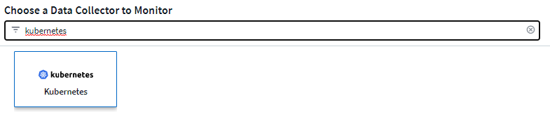
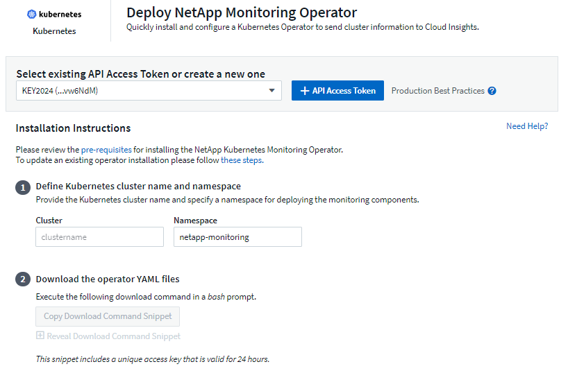

安全性
安全性
配置NetApp Kubernetes监控操作员
 建议更改
建议更改
Cloud Insights 为Kubernetes收集提供了* NetApp Kubernetes监控操作员*(NKMO）。添加数据收集器时、只需选择"Kubernetes "图块即可。

|
如果您使用的是Cloud Insights联邦版、则安装和配置说明可能与此页面上的说明不同。按照Cloud Insights中的说明安装NetApp Kubnetes监控操作员。 |

操作员和数据收集器将从Cloud Insights Docker注册表中下载。安装后、NKMOO将管理部署在Kubernetes集群节点中的任何与操作员兼容的收集器以获取数据、包括管理这些收集器的生命周期。在此链之后、将从收集器中获取数据并将其发送到Cloud Insights。
安装NetApp Kubernetes监控操作员之前

|
阅读 "安装或升级前" 安装或升级NetApp Kubornetes监控操作员之前的文档。 |
安装NetApp Kubernetes监控操作员


-
输入唯一的集群名称和命名空间。如果您是 升级 在先前的Kubnetes Operator中、请使用相同的集群名称和命名空间。
-
输入这些代码后、您可以将Download Command代码录复制到剪贴板。
-
将此代码片段粘贴到 bash 窗口中并执行。此时将下载Operator安装文件。请注意、此代码片段具有唯一的密钥、有效期为24小时。
-
如果您有自定义或私有存储库、请复制可选的映像提取代码段、将其粘贴到_bash_ shell中并执行该代码段。提取映像后、将其复制到您的私有存储库。请务必保持相同的标记和文件夹结构。更新_operator-DEPRAYAML_中的路径以及_operator-config.yaml_中的Docker存储库设置。
-
如果需要、请查看可用的配置选项、例如代理或专用存储库设置。您可以阅读有关的更多信息 "配置选项"。
-
准备好后、请通过复制kubec临时 应用的小程序来部署Operator、然后下载并执行该操作。
-
安装将自动进行。完成后、单击_Next_按钮。
-
安装完成后、单击_Next_按钮。同时、请务必删除或安全地存储_operator-秘密.yaml文件。
了解更多信息 正在配置代理。
了解更多信息 使用自定义/私有Docker存储库。
在安装NetApp Kubnetes Monitoring Operator时、默认情况下会启用Kubnetes EMS日志收集。要在安装后禁用此收集、请单击Kubernetes集群详细信息页面顶部的*修改部署*按钮、然后取消选择"日志收集"。

此屏幕还会显示当前日志收集状态。以下是可能的状态：
-
已禁用
-
enabled
-
Enabled (已启用)—正在进行安装
-
Enabled (已启用)—脱机
-
Enabled (已启用)-联机
-
错误- API密钥权限不足
升级
升级到最新的NetApp Kubernetes监控操作员
确定现有Operator是否存在AgentConfiguration (如果您的命名空间不是默认的_NetApp-monitoring _、请替换相应的命名空间)：
kubectl -n netapp-monitoring get agentconfiguration netapp-monitoring-configuration 如果存在AgentConfiguration：
如果AgentConfiguration不存在：
-
记下Cloud Insights 可识别的集群名称(如果您的命名空间不是默认的NetApp监控、请替换相应的命名空间)：
kubectl -n netapp-monitoring get agent -o jsonpath='{.items[0].spec.cluster-name}' * 为现有Operator创建备份(如果您的命名空间不是默认的NetApp监控、请替换相应的命名空间)：kubectl -n netapp-monitoring get agent -o yaml > agent_backup.yaml * <<to-remove-the-netapp-kubernetes-monitoring-operator,卸载>> 现有操作员。 * <<installing-the-netapp-kubernetes-monitoring-operator,安装>> 最新的运算符。
-
请使用相同的集群名称。
-
下载最新的Operator YAML文件后、在部署之前、将在agent_backup.yaml中找到的所有自定义设置移植到下载的operator-config.yaml。
-
确保您的状态 提取最新的容器映像 如果使用的是自定义存储库。
-
停止和启动NetApp Kubernetes监控操作员
要停止NetApp Kubernetes监控操作员、请执行以下操作：
kubectl -n netapp-monitoring scale deploy monitoring-operator --replicas=0 要启动NetApp Kubernetes监控操作员、请执行以下操作：
kubectl -n netapp-monitoring scale deploy monitoring-operator --replicas=1
正在卸载
删除NetApp Kubernetes监控操作员
请注意、NetApp Kubernetes监控操作员的默认命名空间为"netapp-monitoring"。 如果您已设置自己的命名空间，请在这些命令和所有后续命令和文件中替换该命名空间。
可以使用以下命令卸载较新版本的监控操作员：
kubectl -n <NAMESPACE> delete agent -l installed-by=nkmo-<NAMESPACE> kubectl -n <NAMESPACE> delete clusterrole,clusterrolebinding,crd,svc,deploy,role,rolebinding,secret,sa -l installed-by=nkmo-<NAMESPACE>
如果监控操作员部署在自己的专用命名空间中、请删除此命名空间：
kubectl delete ns <NAMESPACE> 如果第一个命令返回"未找到资源"、请按照以下说明卸载旧版本的监控操作员。
按顺序执行以下每个命令。根据您当前的安装情况、其中某些命令可能会返回‘object not found '消息。可以安全地忽略这些消息。
kubectl -n <NAMESPACE> delete agent agent-monitoring-netapp kubectl delete crd agents.monitoring.netapp.com kubectl -n <NAMESPACE> delete role agent-leader-election-role kubectl delete clusterrole agent-manager-role agent-proxy-role agent-metrics-reader <NAMESPACE>-agent-manager-role <NAMESPACE>-agent-proxy-role <NAMESPACE>-cluster-role-privileged kubectl delete clusterrolebinding agent-manager-rolebinding agent-proxy-rolebinding agent-cluster-admin-rolebinding <NAMESPACE>-agent-manager-rolebinding <NAMESPACE>-agent-proxy-rolebinding <NAMESPACE>-cluster-role-binding-privileged kubectl delete <NAMESPACE>-psp-nkmo kubectl delete ns <NAMESPACE>
如果以前创建了安全上下文约束：
kubectl delete scc telegraf-hostaccess
关于Kube-state-metrics
NetApp Kubernetes监控操作员会自动安装Kube-state-metrics；无需用户交互。
Kube-state-metrics 计数器
使用以下链接访问这些Kubbe状态指标计数器的信息：
== Configuring the Operator 在较新版本的运算符中，可以在_AgentConfiguration_自定义资源中配置最常修改的设置。您可以通过编辑_operator-config.yaml文件来在部署操作员之前编辑此资源。此文件包含一些已注释掉的设置示例。请参见列表 link:telegraf_agent_k8s_config_options.html["可用设置"] 对于最新版本的运算符。
您也可以在部署操作员后使用以下命令编辑此资源：
kubectl -n netapp-monitoring edit AgentConfiguration 要确定您部署的操作员版本是否支持AgentConfiguration、请运行以下命令：
kubectl get crd agentconfigurations.monitoring.netapp.com 如果您看到“Error from server (NotFound)”消息，则必须先升级操作员，然后才能使用AgentConfiguration。
配置代理支持
要安装NetApp Kubernetes监控操作员、您可以在环境中的两个位置使用代理。这些代理系统可以是相同的、也可以是单独的：
-
在执行安装代码片段(使用"curt")期间需要使用代理将执行该片段的系统连接到Cloud Insights 环境
-
目标Kubernetes集群与Cloud Insights 环境通信所需的代理
如果您对其中一项或两项操作使用代理、则要安装NetApp Kubernetes操作监控器、必须先确保您的代理已配置为可以与Cloud Insights 环境进行良好的通信。如果您有一个代理、并且可以从要安装此操作员的服务器/VM访问Cloud Insights 、则您的代理可能已正确配置。
对于用于安装NetApp Kubernetes操作监控器的代理、在安装操作员之前、请设置_http_proxy/https_proxy_environment变量。对于某些代理环境、您可能还需要设置_no_proxy environment_变量。
要设置变量、请在您的系统上*在*安装NetApp Kubernetes监控操作员之前*执行以下步骤：
-
为当前用户设置 https_proxy 和 / 或 http_proxy 环境变量：
-
如果要设置的代理没有身份验证(用户名/密码)、请运行以下命令：
export https_proxy=<proxy_server>:<proxy_port> .. 如果要设置的代理具有身份验证(用户名/密码)、请运行以下命令：
export http_proxy=<proxy_username>:<proxy_password>@<proxy_server>:<proxy_port>
-
要使Kubernetes集群与Cloud Insights 环境通信所使用的代理、请在阅读完所有这些说明后安装NetApp Kubernetes监控操作员。
在部署NetApp Kubernetes Monitoring Operator之前、请在operator-config.yaml中配置AgentConfiguration的代理部分。
agent:
...
proxy:
server: <server for proxy>
port: <port for proxy>
username: <username for proxy>
password: <password for proxy>
# In the noproxy section, enter a comma-separated list of
# IP addresses and/or resolvable hostnames that should bypass
# the proxy
noproxy: <comma separated list>
isTelegrafProxyEnabled: true
isFluentbitProxyEnabled: <true or false> # true if Events Log enabled
isCollectorsProxyEnabled: <true or false> # true if Network Performance and Map enabled
isAuProxyEnabled: <true or false> # true if AU enabled
...
...
使用自定义或专用Docker存储库
默认情况下、NetApp Kubrenetes监控操作员将从Cloud Insights 存储库中提取容器映像。如果您将某个Kubornetes集群用作监控目标、并且该集群配置为仅从自定义或私有Docker存储库或容器注册表中提取容器映像、则必须配置对NetApp Kubornetes监控操作员所需容器的访问权限。
从NetApp Monitoring Operator安装磁贴运行"Image Pull Snippet"。此命令将登录到Cloud Insights 存储库、提取操作员的所有映像依赖关系、然后注销Cloud Insights 存储库。出现提示时、输入提供的存储库临时密码。此命令可下载操作员使用的所有映像、包括可选功能的映像。请参见以下内容、了解这些图像用于哪些功能。
核心操作员功能和Kubornetes监控
-
NetApp监控
-
CI-KKube-RBAC-代理
-
CI-KSM
-
CI-(国际通信
-
distroless root用户
事件日志
-
CI-流畅位
-
CI-Kuber-netes-event-exporter
网络性能和映射
-
CI-net-observer
根据您的企业策略，将操作员 Docker 映像推送到您的私有 / 本地 / 企业 Docker 存储库。确保存储库中这些映像的映像标记和目录路径与Cloud Insights 存储库中的映像一致。
在operator-DEPLOYAML中编辑monitor-operator部署、并修改所有映像引用以使用私有Docker存储库。
image: <docker repo of the enterprise/corp docker repo>/kube-rbac-proxy:<ci-kube-rbac-proxy version> image: <docker repo of the enterprise/corp docker repo>/netapp-monitoring:<version>
编辑operator-config.yaml中的AgentConfiguration以反映新的Docker repo位置。为私有存储库创建新的imagePullSecret,有关更多详细信息，请参见_https://kubernetes.io/docs/tasks/configure-pod-container/pull-image-private-registry/_
agent: ... # An optional docker registry where you want docker images to be pulled from as compared to CI's docker registry # Please see documentation link here: https://docs.netapp.com/us-en/cloudinsights/task_config_telegraf_agent_k8s.html#using-a-custom-or-private-docker-repository dockerRepo: your.docker.repo/long/path/to/test # Optional: A docker image pull secret that maybe needed for your private docker registry dockerImagePullSecret: docker-secret-name
OpenShift 说明
如果您运行的是OpenShift 4.6或更高版本、则必须在_operator-config.yaml中编辑AgentConfiguration以启用_run特权_设置：
# Set runPrivileged to true SELinux is enabled on your kubernetes nodes runPrivileged: true
OpenShift可以实施更高的安全级别、从而可能阻止对某些Kubernetes组件的访问。
关于安全的注意事项
要删除NetApp Kubernetes监控操作员在集群范围内查看机密的权限、请在安装之前从_operator-setup.yaml文件中删除以下资源：
ClusterRole/netapp-ci-<namespace>-agent-secret-clusterrole ClusterRoleBinding/netapp-ci-<namespace>-agent-secret-clusterrolebinding
如果是升级、请同时从集群中删除资源：
kubectl delete ClusterRole/netapp-ci-<namespace>-agent-secret-clusterrole kubectl delete ClusterRoleBinding/netapp-ci-<namespace>-agent-secret-clusterrolebinding
如果启用了"变更分析"、请修改_AgentConfiguration_或_operator-config.yaml_以取消注释change-management部分、并在change-management部分下包括_kindsToIgnoreFamWatch："secnes"_。记下此行中单引号和双引号的存在和位置。
# change-management: ... # # A comma separated list of kinds to ignore from watching from the default set of kinds watched by the collector # # Each kind will have to be prefixed by its apigroup # # Example: '"networking.k8s.io.networkpolicies,batch.jobs", "authorization.k8s.io.subjectaccessreviews"' kindsToIgnoreFromWatch: '"secrets"' ...
验证 Kubernetes 校验和
Cloud Insights 代理安装程序会执行完整性检查，但某些用户可能希望在安装或应用下载的项目之前执行自己的验证。要执行仅下载操作（与默认的下载和安装操作相反），这些用户可以编辑从 UI 获取的代理安装命令并删除尾随的 "install" 选项。
请按照以下步骤操作：
-
按照说明复制 Agent 安装程序代码片段。
-
请将代码片段粘贴到文本编辑器中，而不是将其粘贴到命令窗口中。
-
从命令中删除后缀"-install"。
-
从文本编辑器复制整个命令。
-
现在，将其粘贴到命令窗口（在工作目录中）并运行。
-
Download and install （下载并安装）（默认）：
installerName=cloudinsights-rhel_centos.sh … && sudo -E -H ./$installerName --download –-install ** 仅下载：
installerName=cloudinsights-rhel_centos.sh … && sudo -E -H ./$installerName --download
-
仅下载命令会将所有所需的项目从 Cloud Insights 下载到工作目录。 这些项目包括但不限于：
-
安装脚本
-
环境文件
-
YAML 文件
-
签名校验和文件（ SHA256.signed ）
-
用于签名验证的 PEM 文件（ netapp_cert.pem ）
安装脚本，环境文件和 YAML 文件可以通过目视检查进行验证。
可以通过确认 PEM 文件的指纹为以下内容来验证 PEM 文件：
1A918038E8E127BB5C87A202DF173B97A05B4996 更具体地说，
openssl x509 -fingerprint -sha1 -noout -inform pem -in netapp_cert.pem 可以使用 PEM 文件验证签名校验和文件：
openssl smime -verify -in sha256.signed -CAfile netapp_cert.pem -purpose any 在对所有项目进行满意的验证后，可以通过运行以下命令启动代理安装：
sudo -E -H ./<installation_script_name> --install
故障排除
如果在设置NetApp Kubernetes监控操作员时遇到问题、请尝试执行以下操作：
| 问题： | 请尝试以下操作： |
|---|---|
我未看到 Kubernetes 永久性卷与相应后端存储设备之间的超链接 / 连接。我的 Kubernetes 永久性卷使用存储服务器的主机名进行配置。 |
按照以下步骤卸载现有的 Telegraf 代理，然后重新安装最新的 Telegraf 代理。您必须使用Telegraf 2.0或更高版本、并且Cloud Insights 必须主动监控您的Kubernetes集群存储。 |
我在日志中看到如下消息： |
如果您运行的是Kube-state-metrics版本2.0.0或更高版本、而Kubernetes版本低于1.20、则可能会出现这些消息。 |
我看到来自Telegraf的错误消息如下所示、但Telegraf确实启动并运行： |
这是一个已知的问题描述。 请参见 "此 GitHub 文章" 有关详细信息：只要 Telegraf 启动并运行，用户就可以忽略这些错误消息。 |
在Kubelnetes上、我的Telegraf Pod报告以下错误： |
如果启用并强制实施SELinux、则可能会阻止Telegraf Pod访问Kubelnetes节点上的/proc/1/mountstats文件。要克服此限制、请编辑代理配置并启用run特权 设置。有关详细信息、请参见： https://docs.netapp.com/us-en/cloudinsights/task_config_telegraf_agent_k8s.html#openshift-instructions。 |
在Kubelnetes上、我的Telegraf ReporticaSet Pod报告以下错误： |
Telegraf ReplicaSet Pod 应在指定为主节点或 etcd 节点上运行。如果 ReplicaSet Pod 未在其中一个节点上运行，您将收到这些错误。检查您的主 /etcd 节点是否具有此类节点的影响。如果是，请将必要的容错添加到 Telegraf ReplicaSet ，即 Teleaf-RS 中。 |
我使用的是PSP/PSA环境。这是否会影响我的监控操作员？ |
如果您的Kubernetes集群运行时已设置Pod安全策略(PSP)或Pod安全准入(PSA)、则必须升级到最新的NetApp Kubernetes监控操作员。按照以下步骤升级到支持PSP/PSA的最新的新一轮驱动程序： |
我在尝试部署NKMOO时遇到问题、并且正在使用PSP/PSA。 |
1.使用以下命令编辑代理： |
grep -i psp (应显示未找到任何内容) |
出现"ImagePullBackoff"错误 |
如果您拥有自定义或专用Docker存储库、但尚未将NetApp Kubernetes监控操作员配置为正确识别该存储库、则可能会出现这些错误。 阅读更多内容 关于为自定义/私有repo. |
我正在部署监控操作员问题描述 、而当前文档对我的解决没有帮助。 |
捕获或记下以下命令的输出、然后联系技术支持团队。 kubectl -n netapp-monitoring get all kubectl -n netapp-monitoring describe all kubectl -n netapp-monitoring logs <monitoring-operator-pod> --all-containers=true kubectl -n netapp-monitoring logs <telegraf-pod> --all-containers=true |
在KMO命名空间中、Net-Observer (Workload Map) Pod位于CrashLoopBackOff中 |
这些Pod对应于用于网络可观察性的工作负载映射数据收集器。请尝试以下操作： |
Pod正在KMO命名空间中运行(默认值：netapo-monitoring)、但在查询中、UI中不会显示工作负载映射数据或Kubornetes指标数据 |
检查K8S集群节点上的时间设置。为了准确地进行审核和数据报告、强烈建议使用网络时间协议(NTP)或简单网络时间协议(SNTP)同步Agent计算机上的时间。 |
在新工单命名空间中、某些Net-observer Pod处于Pending状态 |
Net-observer是一个DemonSet、在K8s集群的每个节点上运行一个POD。 |
安装NetApp Kubenetes监控操作员后、我的日志中立即显示以下内容： |
通常、只有在安装了新操作员且_craaf-RS_ POD在_KSM_ POD启动之前启动时、才会显示此消息。所有Pod运行后、这些消息应停止。 |
我没有看到为集群中的Kubnetes CronJobs收集任何指标。 |
验证您的Kubbernetes版本(即 |
安装操作员后、该特拉夫DS Pod进入CrashLoopBackOff、并且POD日志指示"su：authentication failure"(su：身份验证失败)。 |
编辑_AgentConfiguration_中的"特拉夫"部分、并将_dockerMetricCollectionEnabled"设置为false。有关详细信息、请参见操作员的 "配置选项"。 |
我在Telegraf日志中看到重复出现以下错误消息： |
编辑_AgentConfiguration_中的"特拉夫"部分、并将_dockerMetricCollectionEnabled"设置为false。有关详细信息、请参见操作员的 "配置选项"。 |
我缺少一些事件日志的_volvedobject_数据。 |
确保已按照中的步骤进行操作 "权限" 第节。 |
为什么我看到两个监控操作员Pod正在运行、一个名为NetApp-CI-monitoring operator-Pod <pod>、另一个名为monitoring operator-Pod？<pod> |
自2023年10月12日起、Cloud Insights已对运营商进行重构、以更好地为用户服务；要全面采用这些更改、您必须执行 删除旧运算符 和 安装新的。 |
我的Kubbernetes事件意外停止向Cloud Insights报告。 |
检索事件导出器Pod的名称： `kubectl -n netapp-monitoring get pods |
grep event-exporter |
awk '{print $1}' |
sed 's/event-exporter./event-exporter/'` |
我发现NetApp Kubenetes监控操作员部署的POD因资源不足而崩溃。 |
请参见NetApp Kubnetes监控操作员 "配置选项" 根据需要增加CPU和/或内存限制。 |
可以从找到追加信息 "支持" 页面或中的 "数据收集器支持列表"。